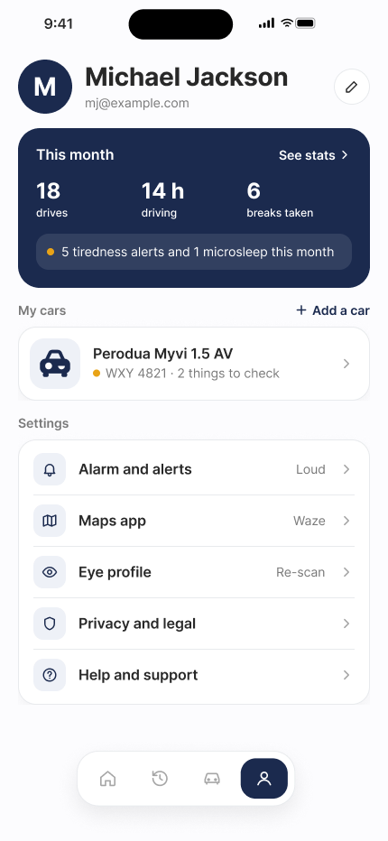
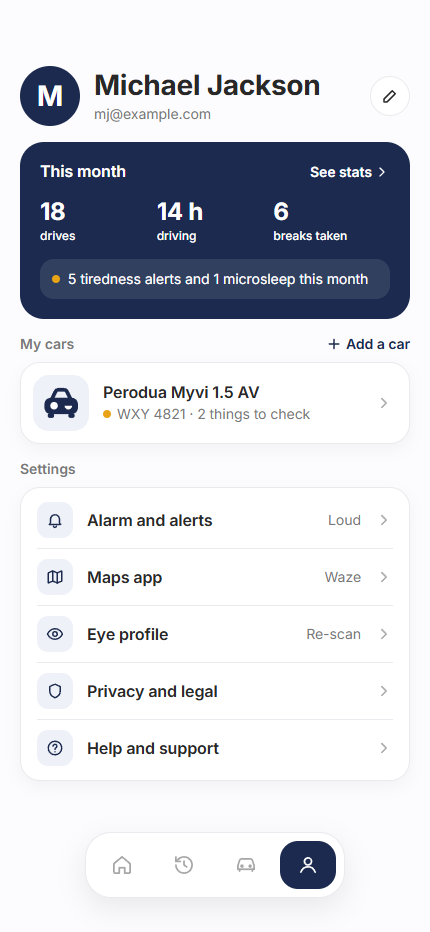
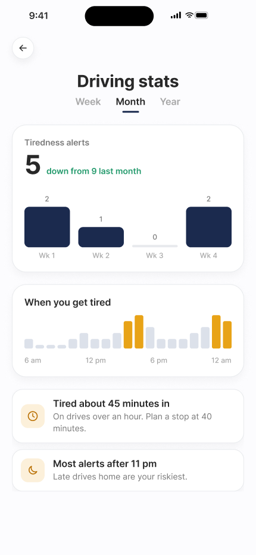
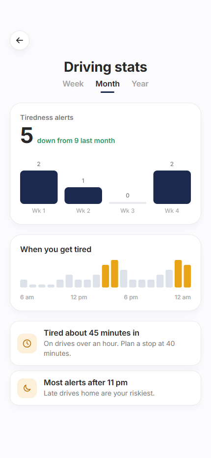
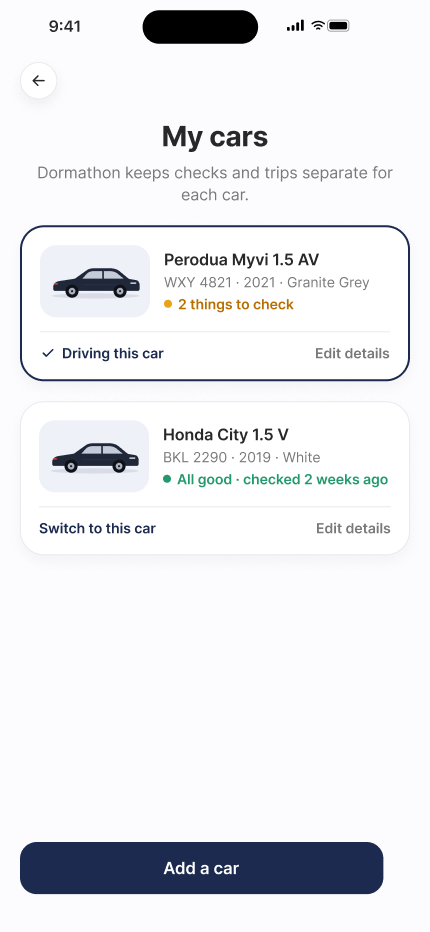
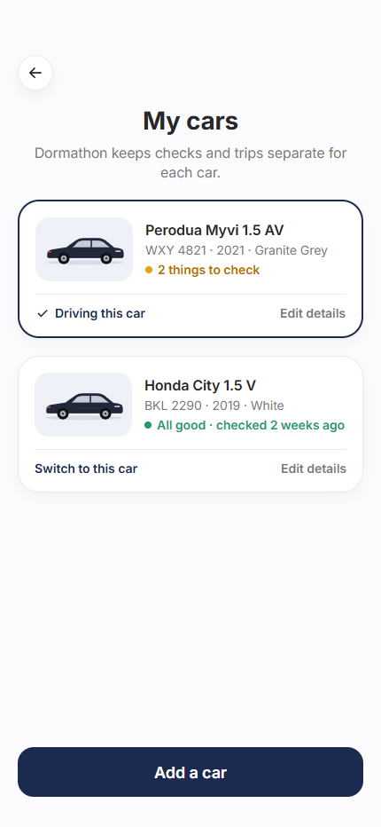
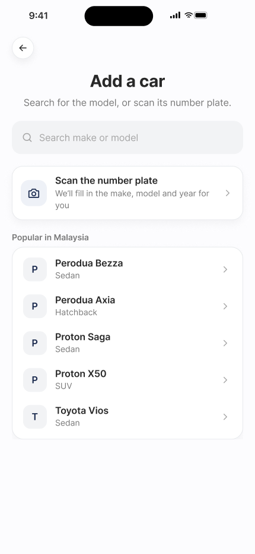
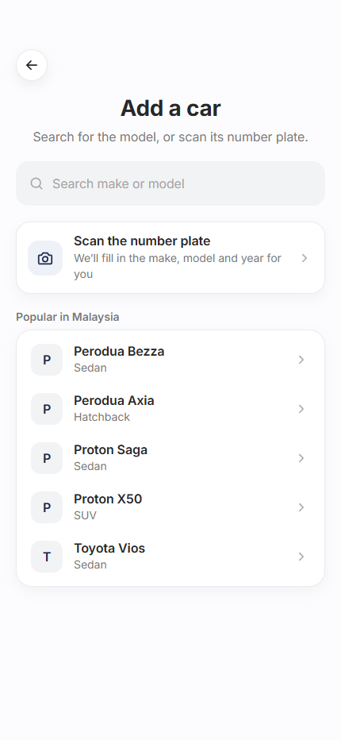
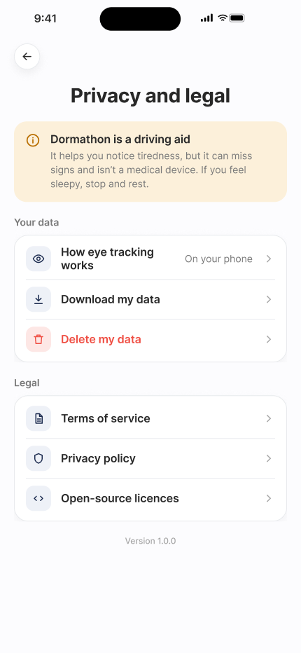
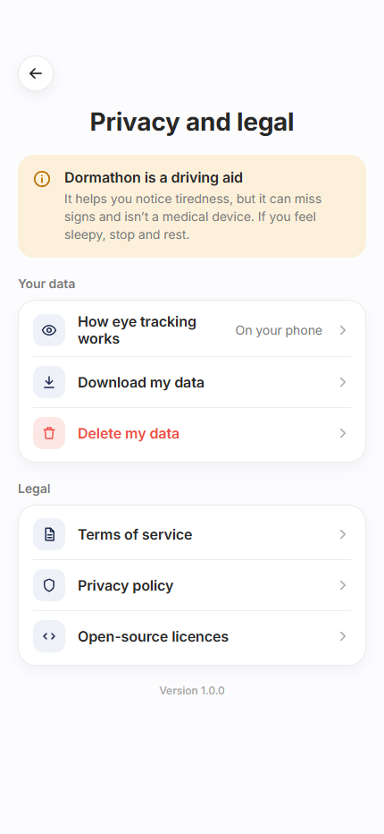

Figma at left; browser rendering at right. Both use 430 × 932 pixels. On a phone, swipe each pair sideways.
The app omits the fake status bar and reuses shared 40px icon buttons, 56px buttons and the tab bar. Footer controls sit 34px above the bottom edge, respecting safe areas. Text antialiasing can differ from Figma.
Profile and car data use the source sample values. Prototype links work. Controls without Figma actions, including account edits, alarm settings, car switching, plate scanning and legal/data operations, remain static. Month is the source stats period.
60px avatar, stats card at y142/h177, current car at y362 and settings at y487. Shared Profile tab bar.


Original monthly and hourly chart SVGs. Cards at y209/h248 and y477/h156; insights at y653. The source shows Month selected.


Original exported car illustration, 156px selected card and 154px second card. Add a car opens P4.


Shared search input with original search icon. Popular model filtering works; selecting a model follows the source return to My cars.


Source driving-aid notice, Your data and Legal groups with original icons. Data and legal actions are static in this UI phase.

